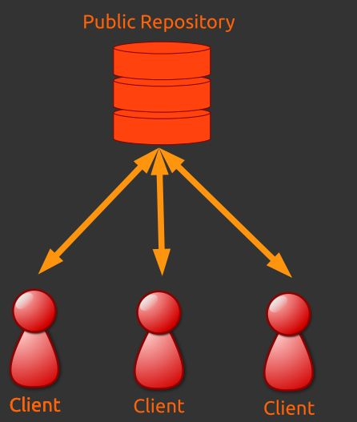
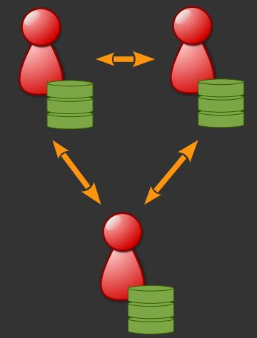

Runde 1 – Versionsverwaltung¶
Effiziente Programmierung innerhalb eines Teams bzw. auch als einzelner Entwickler ist ohne eine solide Versionsverwaltung eigentlich nicht mehr denkbar. Der Vorteil von Versionsverwaltungssystemen ist kurz gesagt:
- In der Sicherung von Zwischenschritten / Backup
- In der Dokumentation des Herstellungsprozesses
- Im einfachen Experimentieren durch Branching
- Im Vorhandensein von mehr Metainformationen: Wann wurde was warum von wem geändert?
- In der effektive Zusammenarbeit ohne Datenverlust (A und B schreiben nacheinander auf eine Datei ==> letzter Schreibvorgang gewinnt nicht sondern Konflickt muss manuell gelößt werden)
Es haben sich im Laufe der letzten Jahrzehnte letztendlich zwei Konzepte und mehrere konkrete Programme durchgesetzt.
Als Konzept stehen sich dabei die Idee der zentralen bzww. dezentralen Versionsverwaltungssysteme gegenüber.
{kind=link}
Zentrale Versionsverwaltung¶
Der Hauptvertreter dieser Gattung ist sicherlich Subversion. Es entstand als Alternative zu seinem zentralen Vorgänger CVS und sollte dessen Schwächen beheben. Als Haupteigenschaften können folgende Punkte genannt werden
Ein zentraler Server (genauer: ein zentrales Repository)
Clients haben Schreib- und Leseberechtigung auf dem Repository
Client speichert selbst keine Versionierungsdaten
Rein zentralistisches Konzept
Bei Verlust des zentralen Servers hilft hoffentlich ein Backup

{kind=link}
Dezentrale Anarchie¶
{kind=link}
Ausgangspunkt für die Entwicklung dezentraler Versionverwaltungssysteme waren die besonderen Bedürfnisse einiger großer Open-Source-Projekte, darunter auch das Linux-Kernel-Projekt. Nachdem Linux Torvalds aus lizenztechnischen Gründen die Verwendung seiner kommerziellen Lösung (Bitkeeper) nicht mehr aufrechterhalten konnte, initiierte er die Entwicklung einer eigenen Versionsverwaltungssoftware namens git (https://de.wikipedia.org/wiki/Git). Weitere Implementierungen der dezentralen Idee erfolgten in Programmen wie Mercurial, Bazaar und Monotone.
Kerneigenschaften dieser Idee ist:
- Mächtige nicht-lineare Entwicklung (Branching/Merging)
- Kein zentraler Server notwendig: Obwohl es keinen technischen Unterschied zwischen verschiedenen Repositories gibt, gilt die Kopie, auf die von einer Projekt-Homepage aus verwiesen wird, häufig als das offizielle Repository, in das die Revisionen der Entwickler übertragen werden.
- Kryptographische Sicherheit der Projektgeschichte: Der Hash einer beliebigen Revision (commit) auf der vollständigen Geschichte basiert, die zu dieser Revision geführt hat. Dadurch ist es nicht möglich, die Versionsgeschichte nachträglich zu manipulieren, ohne dass sich der Hash der Revision ändert.
- Jeder Client pflegt eigenes lokales Repository
- Clients haben nur auf eigenes Repo Schreibzugriff
- Austausch von Daten über Pull-Requests (bei öffentlichen Repositories) Patchsets (bei privaten Repositories)
- Absolut dezentrale Entwicklung
Diese Ideen entsprachen häufig den Wünschen von Entwicklern, die in großen Teams an großen Projekten arbeiten. Durch die Bereitstellung von Portalen wie github und bitbucket hat sich diese Art der Versionsverwaltung durchgesetzt. Selbst Microsoft bietet in seine Programm tfs mittlerweile die Verwendung des git-Protokolls an.
Neben der ursprünglichen komplett dezentralen Lösung haben sich weitere organisatorische Variationen entwickelt.
Dezentrale – Gemeinsamer Maintree¶
- Gemeinsames Repository für die Hauptentwicklung
- Üblicherweise von wenigen Personen betreut, die Code einpflegen (“Integration Manager”)
- nur diese haben Schreibzugriff auf das gemeinsame Repository
- Abgesegneter Code wird veröffentlicht
- Clients ziehen Updates aus dem Gemeinsamen Repository
{kind=link}
Dezentral - Gestaffelt¶
- Hierarchie aus „Integration Managern“ pflegt jeweils einen Teil
- Verteilung der Verantwortlichkeiten und Lasten auf mehrere Schultern
- Beispielsweise beim Linux Kernel eingesetzt
{kind=link}
Dezentrale - Gatekeeper¶
- Gemeinsames Repository für die Hauptentwicklung
- Automatischer Test von Code auf Korrektheit (z.B. durch Test Framework oder Ablehnung von Code mit @ToDo-Tags